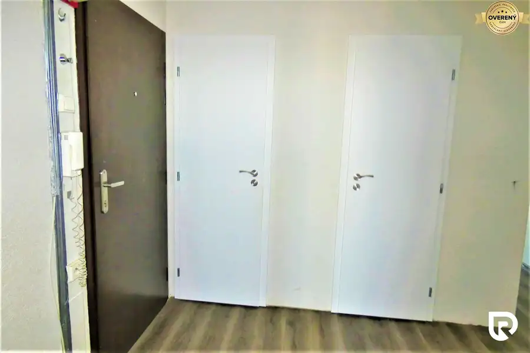
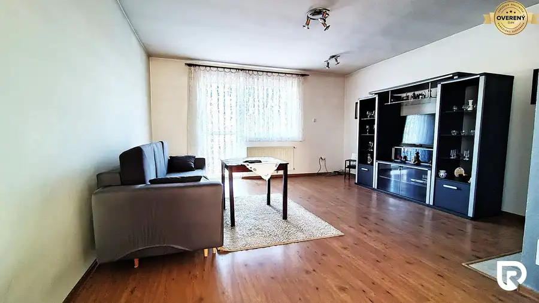

Rodinný dom v obci Unín
Unín
- Dispozícia5-izbový
- Plocha115 m²
- Stavúplne prerobený
- Vlastníctvoosobné
O nehnuteľnosti
Rodinný dom má tvar „L“, hlavný vchod cez podbránie a samostatným zadným vchodom cez posuvnú bránu. Rozloha pozemku je 1104m2 a zastavaná plocha je 185m2. Za zadnou časťou domu sa nachádza hala z trubkovej konštrukcie a pozinkovaného plechu. Šírka haly je 8m, dĺžka 20m a výška 5m. Za domom sa nachádza studňa s pitnou vodou, no rodinný dom je napojený na mestskú vodu. Vykurovanie je zabezpečené krbovými kachľami s radiátormi. Pred domom je prípojka na plyn, žumpa 8m3 a prípojka elektrickej energie 400V.
Rodinný dom bol postavený v roku 1946 s pálenej tehly o hrúbke stien 45cm. Postupne prešiel kompletnou rekonštrukciou, má novú strechu a bol izolovaný proti vlhkosti. Dispozične pozostáva s kúpeľne (sprcha a vaňa), samostatná toaleta, dve chodby, kuchyňa s jedálňou, obývacia izba a spálňa. Druhá časť domu je určená na podnikateľské účely a pozostáva s troch miestností a skladu. Väčšia miestnosť je schválená na potravinárske účely, druhá menšia miestnosť je výrobňa syrov a mliečnych výrobkov a tretia miestnosť je výborne fungujúci obchodík s poctivými potravinami a farmárskymi bio výrobkami.
V týchto priestoroch sa spracovávajú mliečne výrobky a výroba domáceho syra. Hala s plechovej konštrukcie slúži na uskladnenie obilia a techniky. Parkovanie je možné vo vnútri v mieste podbránia, za ktorým sa nachádzajú priestory na chov koní s ohradeným priestorom na výbeh.
Zateplenie rodinného domu nie je potrebné, nakoľko kvalita pálenej tehly a hrúbka stien dostatočne zabezpečuje v letných dňoch príjemné ochladenie miestností a v zime udrží teplo v obytných priestoroch.
Obec Unín sa nachádza na západnom Slovensku v Trnavskom kraji. Susedí po cestnej komunikácii s obcami Radimov, Štefanov a Petrova Ves. Obec leží na južnom úpätí Bielych Karpát v Chvojnickej pahorkatine, v juhovýchodnej časti skalického okresu, bokom od hlavných dopravných tepien. Celková výmera obce je 2 273 ha. Obec sa nachádza 12 km od Holíča a 19 km od Skalice.
Nad obcou sa nachádza relatívne rozsiahly dubový les s prímesou iných väčšinou listnatých stromov. Nižšie položené sú vinohrady, lúky a pasienky. Ostatné plochy boli premenené na ornú pôdu.
Na začiatku roka 2017 mala obec 1 220 obyvateľov. V okolí vyviera studienka známa ako Hoštečná. Traduje sa, že sa pred mnohými rokmi na tomto mieste stal zázrak. Na tomto mieste je z tohto dôvodu vybudovaná kaplnka. Zo služieb sa v obci nachádza Základná škola s materskou školou, Domov dôchodcov Barborka, zdravotné stredisko s lekárňou, reštaurácia, obecná pálenica a ďalšie...
Ak Vás táto ponuka zaujala, neváhajte ma kontaktovať a môžete si dohodnúť obhliadku.
Uvedená cena je konečná, pokiaľ sa zmluvné strany nedohodnú inak a nenavyšuje sa o odmenu sprostredkovateľa, v cene je zahrnuté právne poradenstvo, vyhotovenie kúpnych zmlúv, hypotekárne poradenstvo a uhradenie správneho poplatku za návrh na vklad do katastra nehnuteľností.
Radovan Rothacker
RADO Reality Group
Tel.:
www.radoreality.sk
E-mail:
FB: Reality ZS
Parametre
| Rozloha pozemku | 1104 m² |
|---|---|
| Zastavaná plocha | 185 m² |
| Celková rozloha | 1104 m² |
| Úžitková plocha | 115 m² |
| Poschodie | neuvedené |
| Počet poschodí | 1 |
| Počet izieb | 5 |
| Vlastníctvo | osobné |
| Stav | úplne prerobený |
| Odvoz odpadu | áno - separovaný |
| Voda | studňa a vodovod |
| El. napätie | 230/400V |
| Plyn | áno |
| Kanalizácia | žumpa |
| Internet | lokálny poskytovateľ |
| Kúpeľňa | vaňa a sprchovací kút |
| Vykurovanie | vlastné - pevné palivo |
| Balkón | nie |
| Lódžia | nie |
| Terasa | nie |
| Pivnica | nie |
| Garáž | nie |
| Parkovanie | vnútorné |
| Inžinierske siete | áno |
| Postavené z | tehla |
| Zariadenie | zariadený |
| Zateplený objekt | nie |
| Strecha | po rekonštrukcii |
| Klimatizácia | nie |
| Káblová televízia | nie |
| Energetický certifikát | nie |
| Predzáhradka | nie |
| Bezbariérový prístup | áno |
| Okná | plastové |
| Terén | rovina |
| Prístupová cesta | asfaltová cesta |
| Pripravené na výstavbu | schválené v územnom pláne |
| Dátum zverejnenia | 11. 7. 2024 |
Kde to je
Mohlo by Vás zaujímať

Byt10 150 000 €4-izbový byt v meste Holíč Holíč 4-izbový88 m²6. podlažie RADO Reality vám ponúka na predaj 4-izbový byt v meste Holíč, ktorý prešiel pred piatimi rokmi kompletnou rekonštrukciou. Byt sa nachádza na ulici…
Rodinné domy10 248 000 €Rodinný dom v obci Láb Láb 4-izbový178 m² Zastavaná plocha RD je 126m2 na pozemku 663m2 a úžitkovou plochou 178m2. Suterén má úžitkovú plochu 86m2 a poschodie 92m2. Na 1. podlaží sú dve…